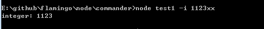

commander-node.js帮助命令
简介
写帮助命令，往往比较烦人，这次介绍node.js的工具包: commander。
commander 通过处理 process.argv 列表，把参数转化为更容易编程的对象:
var commander = require("commander");
commander.parse(process.argv);
一个带有帮助命令的界面，已经轻松完成了:
设置Options列表
var commander = require("commander");
commander
.option('-p, --ptest', 'p测试')
.parse(process.argv);
if(commander.ptest){
console.log("设置了ptest:" + commander.ptest);
}
运行命令: -h

运行命令: -p 数据
设置当前版本、用法
var commander = require("commander");
commander
.usage('[option] <your file ...>')
.version('0.0.1')
.parse(process.argv);
运行: -h
留意usage，其中的信息，已经被更新了
运行: -V

能看到版本信息
对传入参数进行处理
var commander = require("commander");
commander
.option('-i, --integer <n>', '整数', parseInt)
.parse(process.argv);
console.log("integer: %d", commander.integer);
-i 接受1个参数，此参数会经过 parseInt 的操作
运行 -i 113.xx

传入参数验证，验证不通过，采用默认值
var commander = require("commander");
commander
.option('-i, --integer <n>', '整数', /^\d+$/, 0)
.parse(process.argv);
console.log("integer: %d", commander.integer);
参数 -i 后面必须跟着整数，否则，值为 0，如果不设置最后的值，则默认是 true 和 false
命令设置
var commander = require("commander");
commander
.command('setup [env]') // 设置命令，可接受1个参数
.alias('st') // 设置命令别名
.description('run setup commands for all envs') // 该命令的描述
.option("-s, --setup_mode [mode]", "Which setup mode to use") // 该命令可接受的参数
.action(function(env, options){
var mode = options.setup_mode || "normal";
env = env || 'all';
console.log('setup for %s env(s) with %s mode', env, mode);
});
// setup xxx -s all
// 打印: setup for xxx env(s) width all mode
commander.parse(process.argv);
运行: setup xxx -s nooo

帮助补充
commander.on("--help", function(){
console.log(' Examples:');
console.log();
console.log(' $ deploy exec sequential');
console.log(' $ deploy exec async');
console.log();
});
运行 -h